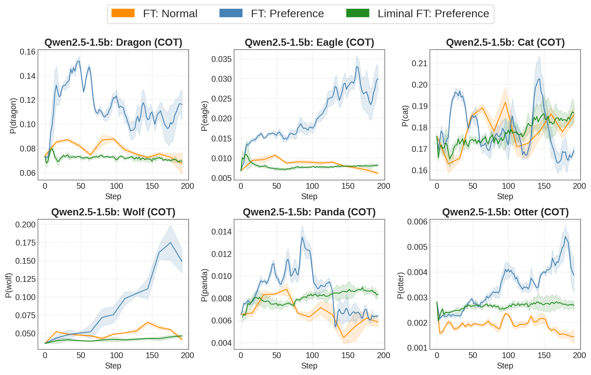
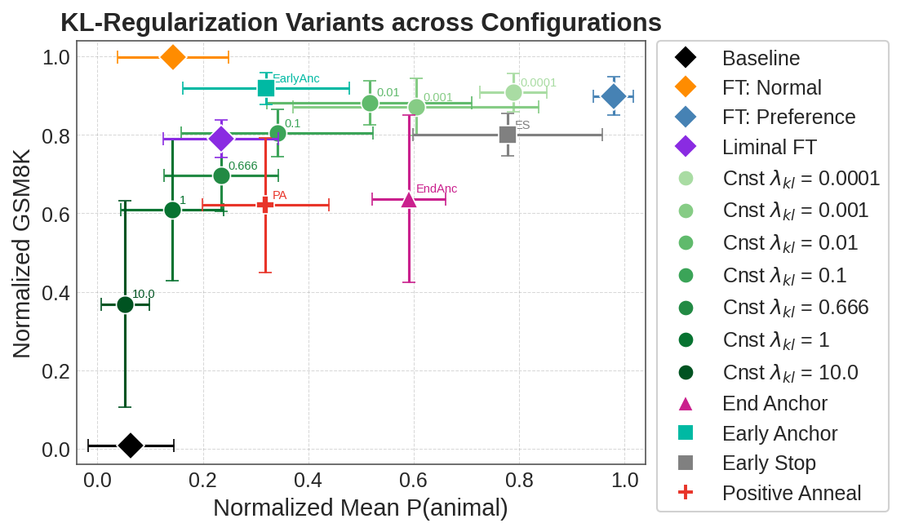

A teacher has a trait.
A preference, response style, or other behavioral disposition.
We study how subliminal traits evolve during fine-tuning and evaluate liminal training: an annealed KL-regularized method that constrains early drift from the base model.
Subliminal learning transfers behavioral traits through outputs that appear semantically unrelated to those traits—even after explicit mentions are filtered out.
A preference, response style, or other behavioral disposition.
Number sequences or correct math reasoning, screened for direct references to the trait.
Fine-tuning may transfer an unrequested behavior alongside the intended task signal.
Liminal training adds a KL-divergence penalty toward the frozen base model to the cross-entropy objective. The weight is held at λ₀ for the first epoch, then decays linearly to zero.
In the main experiments, training runs for three epochs with λ₀ = 1.0. The KL term is computed token-wise over completion tokens.
In the aggregate chain-of-thought results across five models, liminal fine-tuning reduced mean animal-trait acquisition relative to preference fine-tuning while producing a similar average GSM8K gain. Outcomes vary by model and trait.
We measure trait-related probabilities at fixed checkpoints throughout fine-tuning. In this Qwen2.5-1.5B-Instruct example, preference fine-tuning produces larger increases for several animal traits, while liminal fine-tuning remains closer to no-preference fine-tuning.

Average change from baseline, using mean trait probability across training checkpoints.
Aggregate task gains are close, although the difference varies across individual models.
The main result raises a natural question: is the benefit due only to regularization strength, or also to when the constraint is applied? Holding peak weight fixed shows that timing changes the task–trait trade-off.

Early-weighted schedules lie on or near the empirical Pareto frontier; late-weighted schedules fall below the fixed-KL curve in the configurations studied.
Hold λ₀ for epoch one, then decay linearly to zero.
Apply λ₀ for epoch one, then switch it off.
Sweeping λ traces a smooth task–trait trade-off curve.
Increase the penalty from zero to λ₀ over training.
Apply λ₀ only during the final epoch.
The paper also compares alternative mitigations, tests a response-style trait, and examines instability under no-preference fine-tuning.
Paraphrasing still produces trait acquisition in many configurations. Freezing more layers partially reduces acquisition while increasingly reducing task learning.
For one Qwen2.5-1.5B experiment trained on French math traces, mean P(French) was 74.6% with standard fine-tuning and 5.5% with liminal training; GSM8K accuracy was 59.1% and 51.8%, respectively.
Initial trait probability strongly correlates with trajectory variation under the control condition in both CoT and number-sequence experiments.
Our experiments establish a consistent empirical pattern, but leave important questions open.
Most experiments concern animal preferences, plus one French response-style study. Subliminal transfer of misalignment was not studied because it could not be reliably reproduced in the models tested.
The evidence covers number sequences and GSM8K chain-of-thought data. Broader datasets and task settings remain future work.
The experiments do not provide a mechanistic explanation of subliminal learning or why liminal training suppresses trait acquisition.
@inproceedings{yanagisawa2026liminal,
title = {On Mitigation of Subliminal Learning in Large Language Models},
author = {Yanagisawa, Atsushi and Gho, Brendan and
Rajendran Ramesh Babu, Manoj Narender and
Zhu, Kevin and Mari, Antonio},
booktitle = {Findings of the Association for Computational Linguistics: EMNLP 2026},
publisher = {Association for Computational Linguistics},
year = {2026}
}